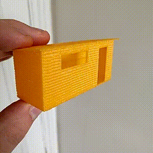
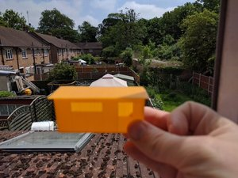
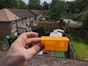
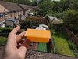

Plan & Set-up
The background to building the ShedShedShed
{kind=link}
{kind=link}
{kind=link}
I need need to build my projects away from the loft. Time to build a man-cave.
Pre-work
Got the old shed removed (and the junk - thanks http://kgwastedisposal.com/). Did some industrial espionage and pricing on other Shed. Local shed shop; google maps . Worked out that cost (~£1,500 Pent Style ) for a pre-built basic shed which is too long and thin. I wanted 17 feet by 6.5 feet not 18 feet by 6 feet. My rough estimates for a similar size, with good thermal isolation and power supply would be cheaper - if I design & built myself.

Step 1 - OpenSCAD
The first step was to build a model in OpenScad, after a couple of iterations we got to a final version that should fit in to the space. The advantage of modelling the shed in OpenSCAD is that I can 3D-Print some useful parts.
Printed Scaled-down Shed
The first useful part I can print is a model of the shed its self.
   {kind=link}
{kind=link}
{kind=link}
This allows me to play with the sizes, shape and look of the shed pre-build. I can also see how it would look in the garden (sort-of).
Return to main project page